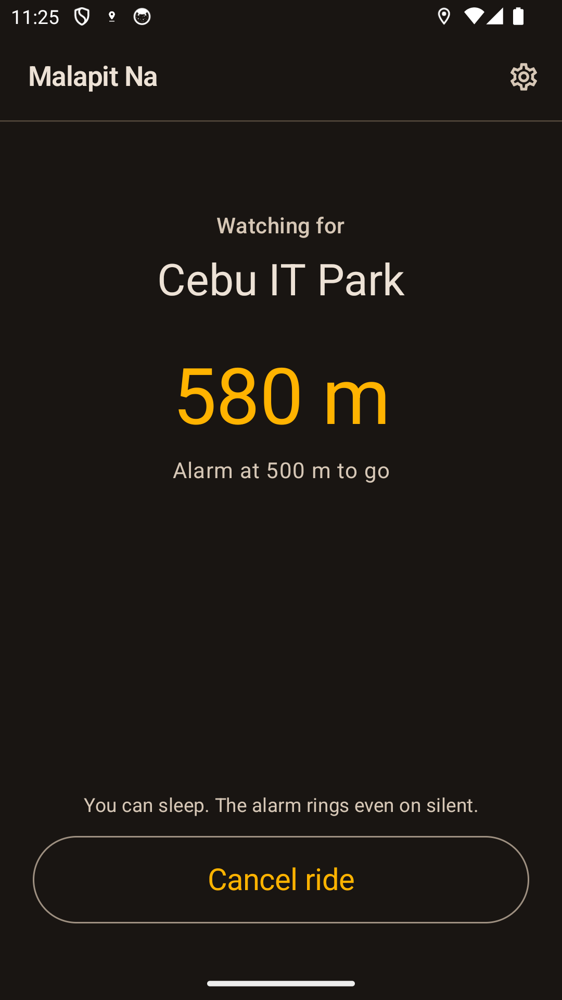
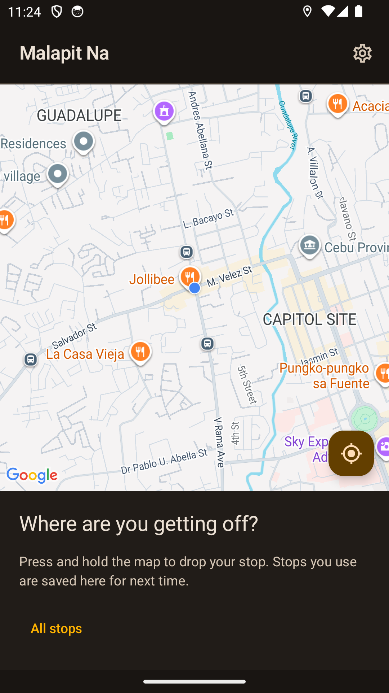
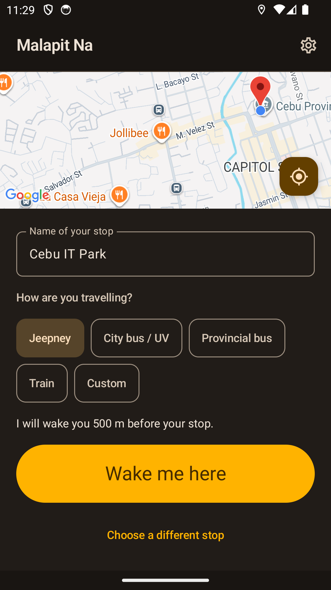
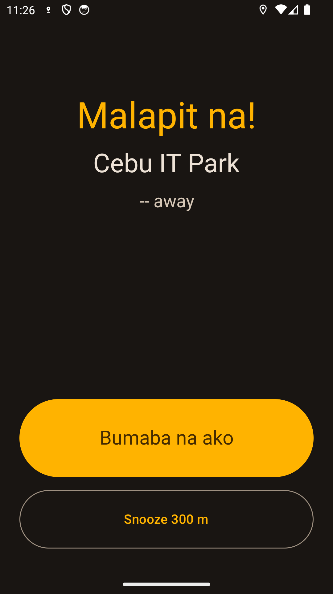

Pick your stop
Drop a pin on the map or use a saved stop for places you ride to often.
Choose where you are getting off and Malapit Na will sound a destination alarm before you arrive—even when your screen is locked.

Drop a pin on the map or use a saved stop for places you ride to often.
Choose a distance made for jeepneys, buses, UV Express, provincial buses, or trains.
A visible ride notification stays active, then the alarm wakes the screen near your stop.
Malapit Na is an Android destination alarm for jeepney, city bus, UV Express, provincial bus, and train rides. Choose your stop and alert distance before you settle in; during an active ride, the alarm keeps watching your distance even when the screen is locked.



Active rides, saved stops, settings, and ride history stay on your device. There is no Malapit Na account, no ads, and no Fri Vei As analytics or backend.
Read the privacy policy →Piliin kung saan ka bababa at patutunugin ng Malapit Na ang destination alarm bago ka dumating—kahit naka-lock ang screen.


Get the destination alarm for Android commuters in the Philippines.